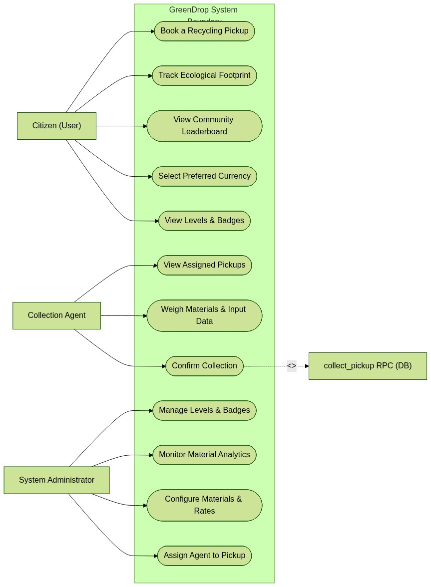
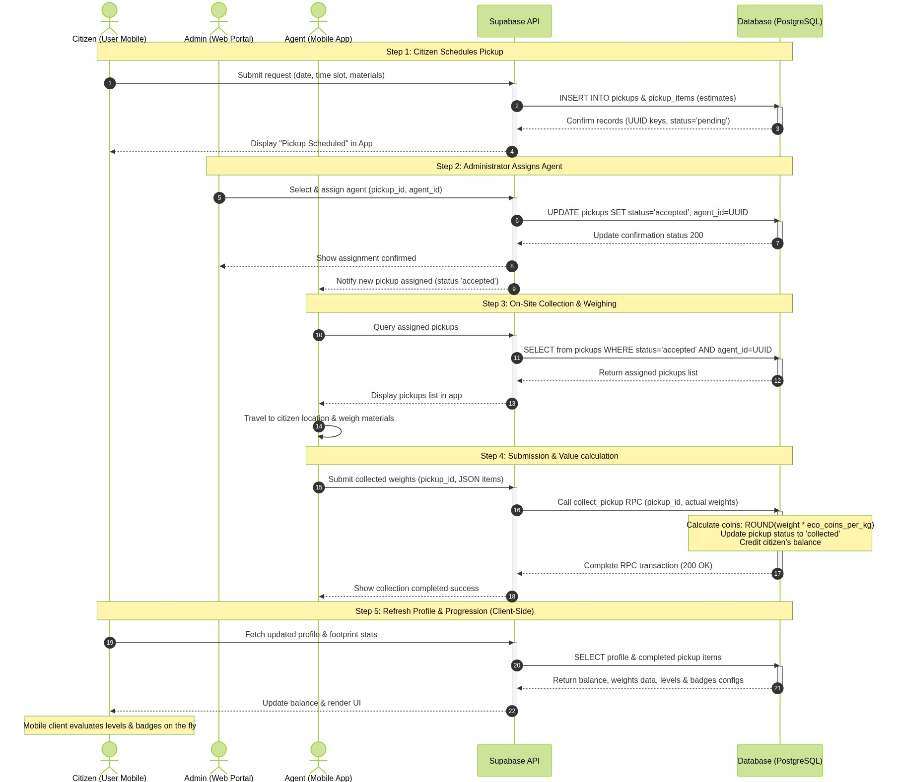
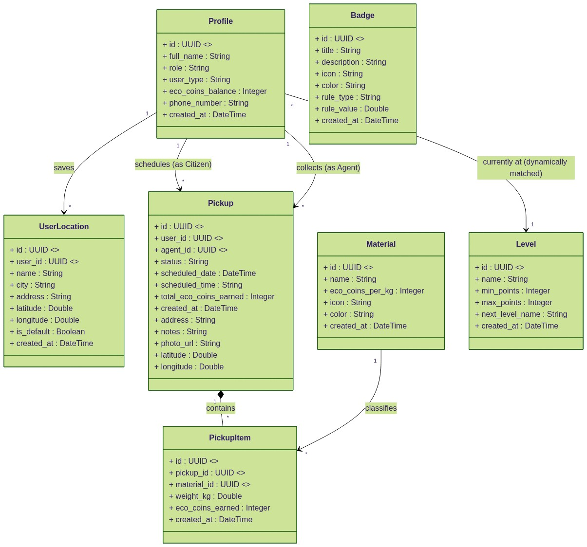
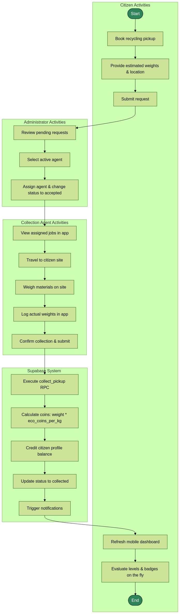

A comprehensive, logically accurate UML blueprint mapping Use Cases (System Boundary), Sequences (Lifeline Activations), Classes (Production Database Types), and Activities (Swimlanes) for the GreenDrop waste recycling and rewards system.
This diagram represents the actors (Citizen, Collection Agent, and Administrator) interacting with the use cases inside the System Boundary. Notice the direct assignment use case, separating administrator decisions from the collection task flow.

This diagram traces chronological step-by-step requests and responses with execution focuses (activations). It outlines the real booking lifecycle: Booking → Admin Assigns Agent → Agent Weighs Materials → call collect_pickup database RPC → real-time client-side progress evaluation.

This schema maps the actual production Supabase entities and columns using standard UML formats. Relies on UUID types for keys and maps the correct materials properties (such as eco_coins_per_kg). Ranks and badges calculations are dynamically resolved on-the-fly, bypassing database persistence tables.

Conforms directly to standard UML Activity Diagram modeling using Swimlanes to separate functional responsibilities across the Citizen, Administrator, Collection Agent, and Database System partitions.
